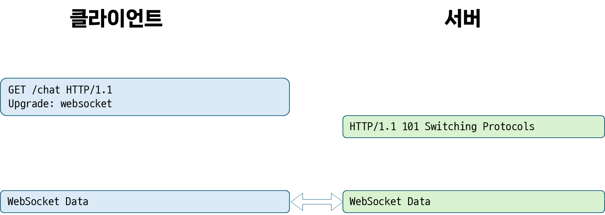
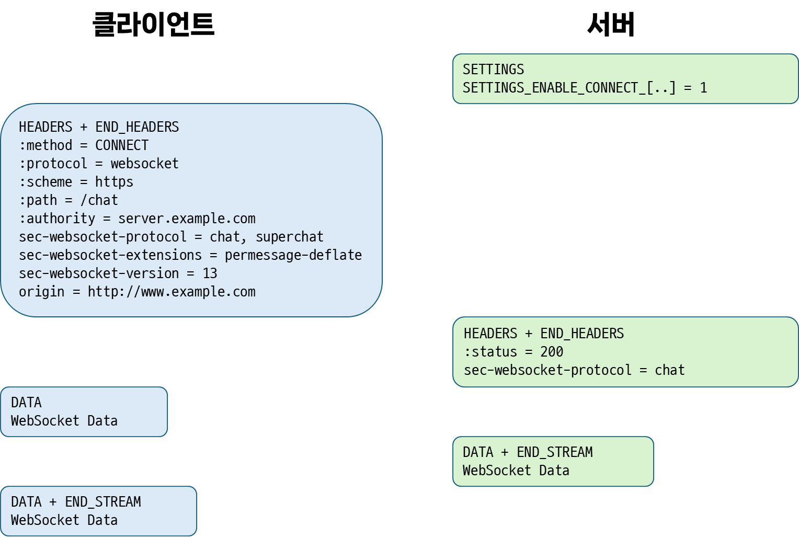
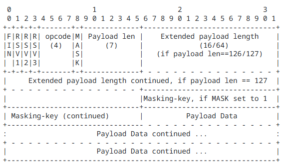

[Network] 웹소켓 알아보기 (w. WebSocket API)
서론
CS 스터디에서 11월 21일 발표한 WebSocket과 WebSocket API에 대해 정리한 문서를 블로그에 공유하고자 한다.
웹소켓(WebSocket)이란?
- 웹소켓(RFC 6455)
- 2011년 등장한 프로토콜
- 통제된 환경에서
신뢰할 수 없는 코드(untrusted code, 브라우저가 신뢰하지 않는 서드-파티나, 웹사이트로부터 읽어들인 코드)를 실행하는클라이언트와, 해당 코드의 통신을 허용한원격 호스트간의양방향 통신을 가능케하는 프로토콜- 이를통해 궁극적으로 서버와 양방향 통신이 필요한 브라우저 기반 애플리케이션이
XMLHttpRequest,<iframe>과 같은 여러 HTTP 연결에 의존하지 않는 방법을 제공하는 것이 목표
- 이를통해 궁극적으로 서버와 양방향 통신이 필요한 브라우저 기반 애플리케이션이
- 웹 브라우저에서 일반적으로 사용되는
출처(Origin) 기반 보안 모델을 사용 - TCP 위에 계층화 되어 있으며, 오프닝 핸드셰이크와 메시지 프레이밍으로 구성됨
등장 배경
- 기존의 경우, 클라이언트 - 서버 양방향 통신이 필요한 경우
업스트림 알림(클라이언트에서 서버로 전송하는 알림)을 전송하는 동시에, 서버에새로운 값을 폴링하는 요청을 보내야 했기 때문에,HTTP 통신이 남발되었음 - 이는 다음과 같은 문제를 야기함
- 서버는 각 클라이언트에 대해
정보를 보내기 위한 연결,정보를 받기 위한 연결을 포함하는여러 TCP 연결을 설정해야 함 - 각
클라이언트-서버 메시지들은HTTP 헤더를 가지므로오버헤드가 발생함 클라이언트 측 스크립트는요청과응답의 흐름을 추적하기 위해,발신 연결(outgoing connections)에서수신 연결(incoming connections)로의매핑을 유지해야 함
- 서버는 각 클라이언트에 대해
- 웹소켓은 양방향 트래픽을 위한
단일 TCP 연결을 사용해 이를 해결하고자 함- 웹소켓 API(WSAPI)와 결합해
HTTP 폴링의 대안을 제공
- 웹소켓 API(WSAPI)와 결합해
- 기존에 존재하는
HTTP 환경의맥락은 살리되, 처음부터 양방향 통신을 위해 고안되지 않은HTTP를 대체할 수 있도록 설계됨- 따라서 HTTP 포트인
80및443에서동작하며HTTP 프록시와중개자(intermediaries)를 지원하도록 설계됨
- 따라서 HTTP 포트인
구성
웹소켓은 연결 수립을 위한핸드셰이크와, 이후 이뤄지는데이터 전송두 가지로 이루어짐- 주고받는
메시지는 하나 이상의프레임으로 이루어짐프레임에 포함될 수 있는 데이터는 여러 유형이 존재하며,한 메시지에 속하는각 프레임은동일한 유형의 데이터를 지님데이터 유형으로는텍스트 데이터(UTF-8),이진 데이터,제어 프레임(연결 닫기와 같은 신호를 전달하기 위해 프로토콜 수준에서 사용 됨)등이 있음
핸드셰이크
오프닝 핸드셰이크
- 연결을 수립하기 위한
오프닝 핸드셰이크는HTTP 기반 서버 SW, 중개자와 호환되도록 설계됨- 즉,
HTTP 클라이언트가 사용하는 포트와동일한 포트사용
- 즉,
- 먼저 클라이언트 측에서 연결 수립을 위해 요청을 전송함
- 이때, HTTP 버전이
1.1인지,2인지에 따라 방식이 다름HTTP/1.1- 먼저 클라이언트 측에서
GET메서드로HTTP Upgrade 요청을 전송<!-- 예시 요청 --> GET /chat HTTP/1.1 Host: server.example.com Upgrade: websocket Connection: Upgrade Sec-WebSocket-Key: dGhlIHNhbXBsZSBub25jZQ== Origin: http://example.com Sec-WebSocket-Protocol: chat, superchat Sec-WebSocket-Version: 13- 웹소켓이 나온 2011년도에는 아직
HTTP/2(2015)가 등장하지 않았기 때문에,HTTP/1.1에 사용되는Upgrade헤더를 사용 Upgrade헤더는HTTP/1.1에서 이미 설정된클라이언트/서버 연결을 다른 프로토콜로 업그레이드 하기 위해 사용되며, 다음과 같은 형태로 작성됨Connection: upgrade Upgrade: protocol_name[/protocol_version]- 연결이 더 지속될 지 알아야 하므로
Connection헤더도 함께 사용됨
- 연결이 더 지속될 지 알아야 하므로
- 웹소켓이 나온 2011년도에는 아직
- 먼저 클라이언트 측에서
- 서버는 핸드셰이크를 수신했음을 증명하기 위해, 두 가지 값을 가져와 합친 뒤 응답을 만들어 냄
- 먼저 클라이언트 핸드셰이크 요청의
Sec-WebSocket-Key헤더 값을 가져옴 - 이후 문자열 형식의
GUID(전역 고유 식별자)인258EAFA5-E914-47DA-95CA-C5AB0DC85B11와 연결함- 해당 값은 웹소켓을 이해하지 못하는 서버에서도 사용될 가능성이 아주 낮은, 웬만해서는 고유한 값임
- 이후 연결한 문자열 값을 SHA-1 해시한 값을 서버 측 핸드셰이크로 전달함
- 예시
- 위에서 사용된
Sec-WebSocket-Key헤더 값인dGhlIHNhbXBsZSBub25jZQ==에258EAFA5-E914-47DA-95CA-C5AB0DC85B11을 연결해dGhlIHNhbXBsZSBub25jZQ==258EAFA5-E914-47DA-95CA- C5AB0DC85B11라는 문자열을 생성 - 이후 이를 SHA-1 해싱해
0xb3 0x7a 0x4f 0x2c 0xc0 0x62 0x4f 0x16 0x90 0xf6 0x46 0x06 0xcf 0x38 0x59 0x45 0xb2 0xbe 0xc4 0xea라는 값을 생성함 - 이 값을 base64 인코딩하여
s3pPLMBiTxaQ9kYGzzhZRbK+xOo=라는 값으로 변환한 뒤,Sec-WebSocket-Accept필드로 전달
- 위에서 사용된
- 먼저 클라이언트 핸드셰이크 요청의
- 그리고 서버에서 핸드셰이크가 완료된 경우에는
101을, 완료되지 않은 경우 이외의 값을 상태코드로 갖는 다음과 같은 형태의 응답을 반환함HTTP/1.1 101 Switching Protocols Upgrade: websocket Connection: Upgrade Sec-WebSocket-Accept: s3pPLMBiTxaQ9kYGzzhZRbK+xOo= HTTP/2HTTP/2의 멀티플렉싱 특성에 의해,Upgrade,Connection과 같은 헤더나101 응답코드와 같이 연결-전반적으로 사용되는 헤더 및 상태 코드를 허용하지 않음- 따라서
HTTP/2환경에서웹소켓을 사용하기 위한부트스트랩이 만들어짐- 이는
HTTP 메서드중 하나인CONNECT를확장해, 단일HTTP/2 스트림에웹소켓용 데이터를 전달할 수 있는터널을 만듦
- 이는
확장된 CONNECT 메서드CONNECT를 통해 생성한 터널에서 어떤 프로토콜을 사용할 지 나타내는 새로운의사-헤더 필드인:protocol을 사용- 해당 필드에 포함될 수 있는 값은 Hypertext Transfer Protocol (HTTP) Upgrade Token Registry에 포함된 값
:protocol을 포함한 요청에는 대항 URI의:scheme,:path의사-헤더 필드도 반드시 포함되어야 함:protocol을 포함한 요청에서는:authority필드가 기존과 다르게 해석 됨- 연결한 호스트와 포트(RFC 7540 #8.3)가 아닌, 대상 URI의 권한(RFC 7540 #8.1.2.3)으로 해석됨
HTTP/1.1의 GET 기반 요청처럼, 클라이언트 측에서CONNECT메서드 요청을 통해 연결 수립을 요청- 해당 요청은
:protocol필드를 반드시 포함해야 하며,websocket값을 가져야 함 - 목표 URI의 스키마의 맨 앞은
wss(htttp)또는ws(http)여야 하며, 나머지는 웹소켓 URI와 동일 HTTP/1.1과 달리Upgrade,Connection,Host헤더를 사용하지 않으며,Host정보는:authority의 일부로 전달됨- 또한,
Sec-WebSocket-Key및Sec-WebSocket- Accept헤더에 대한 처리가:protocol필드로 대체되어 이뤄지지 않음 - 반면
Origin,Sec-WebSocket-Version,Sec-WebSocket-Protocol,Sec-WebSocket-Extensions필드는 사용되나HTTP/1.1과 달리HTTP/2에서는 소문자로 작성되어야 함
- 또한,
- 해당 요청은
클로징 핸드셰이크
- 연결을 종료하기 위해서는 클라이언트, 서버 두 피어 중 한 측(A)에서
제어 시퀀스(control sequence)가 포함된제어 프레임을 전송해클로징 핸드셰이크를 시작할 수 있음 - 이를 수신한 다른 피어(B)는 응답으로
닫기 프레임(close frame)을 전송함 - 응답을 수신한 피어(A)는 연결을 닫으며, 서로는 더 이상 데이터를 보내지도, 수신하지도 않음
- 이러한 별도의
클로징 핸드셰이크는,TCP 클로징 핸드셰이크(FIN/ACK)가 프록시 및 중개자에 의해 신뢰성이 낮아진다는 점을 보완하기 위해 사용됨 HTTP/2에서도 이와 유사한 형태로 스트림 클로저가 이뤄지며, TCP 수준 클로저는HTTP/2데이터 프레임의END_STREAM플래그로 표현됨
기본 데이터 프레임 구조

- 웹소켓 프로토콜에서
데이터 전달을 목적으로 사용되는프레임은 위와 같은 구조로 이루어져 있음 - 클라이언트에서 서버로 전송되는 모든 프레임은
네트워크 중개자(ex. 프록시)의가로채기와 같은 행위를 차단하고,보안 관련 이유로마스킹이 필수적임- 이는 웹소켓이 TLS와 함께 이뤄지는지 여부와 상관 없이 항상 수행
- 서버는 마스킹되지 않은 프레임을 수신할 경우 연결을 닫아야 함
- 주요 필드
FIN- 현재 프레임이 메시지의
마지막 조각(Fragment)임을 나타내는 플래그
- 현재 프레임이 메시지의
opcode- 페이로드 데이터의 유형을 나타내는 값
%x0: 연속 프레임%x1: 텍스트 프레임%x2: 이진 프레임%x8: 연결 종료%x9: 핑 /%xA: 퐁
- 페이로드 데이터의 유형을 나타내는 값
masking key- 클라이언트에서 서버로 전송되는 모든 프레임은 이 32비트
마스킹 키로 마스킹 됨 - 클라이언트는 매 번 허용된 32비트 값 집합에서 새로운 마스킹 키를 선택해, 프레임을 마스킹해야 함
- 클라이언트에서 서버로 전송되는 모든 프레임은 이 32비트
payload data애플리케이션 데이터와, 그와 연결된확장 데이터로 이뤄짐확장 데이터: 오프닝 핸드셰이크때 사전 협의된 길이와 방법대로 사용되는 추가 데이터애플리케이션 데이터:확장 데이터다음 프레임의 나머지 공간을 차지하는 데이터
Javascript의 WebSocket
- Javascript에서는
Web API중브라우저 API에서 제공되는WebSocket API를 활용해 브라우저와 서버간 양방향 통신을 열 수 있음 WebSocket API는 웹소켓 연결 및 통신을 위한 두 가지 메커니즘인WebSocket인터페이스와WebSocketStream인터페이스를 제공WebSocket- 안정적이며, 대부분의 브라우저 및 서버에서 지원됨
- 다만,
배압(Backpressure)을 지원하지 않기 때문에 애플리케이션이 처리할 수 있는 속도보다 빠르게 메시지가 도착할 경우메시지를 버퍼링해메모리를 가득 채우거나,CPU 사용률이 100%가 되어 애플리케이션이 정상 동작하지 않을 수 있음
WebSocketStreamWebSocket의Promise기반 대안으로,Stream API를 사용해 메시지 수신 및 전송을 처리함- 따라서 소켓 연결이
Stream Backpressure자동으로 활용하여 읽기 및 쓰기 속도를 조절할 수 있고, 이를 통해 병목 현상을 방지할 수 있음 - 그러나,
WebSocketStream은 비표준으로,크로미움 기반 브라우저(ex. Chrome, Edge, …)을 제외한 나머지 브라우저들(Safari, Firefox)은 지원하지 않고 있음
- 따라서 소켓 연결이
WebSocket API
연결 생성하기
- 웹소켓 연결을 생성하기 위해서는,
WebSocket생성자를 호출하면 됨
// WebSocket 생성자는 url, 또는 url과 protocol을 인자로 받음
// 1. new WebSocket(url)
// url은 ws, wss, http, https 중 하나의 스키마를 사용해야 함
// 또한, Node.js나 Deno같은 JS 런타임에서는 http, https를 비롯해 상대 URL을 지원하지 않음
const socket = new WebSocket("ws://somewhere.net");
// 2. new WebSocket(url, protocols)
// protocols는 웹소켓의 서브 프로토콜을 나타내는 문자열(또는 문자열 배열)
// 연결당 하나의 서브 프로토콜만 선택할 수 있으며, 허용되는 값은 `Sec-WebSocket-Protocol HTTP`에서 지정할 수 있는 값임
const socket = new WebSocket("ws://somewhere.net", ["soap"]);
- 생성된
WebSocket객체의 프로퍼티를 통해 어떤 호스트와 통신하는지, 서브 프로토콜은 무엇인지를 알 수 있음- 서브 프로토콜은 IANA의 WebSocket Subprotocol Name Registry에 포함된 것으로 사용 가능
console.log(socket.url) // 'ws://somewhere.net'
console.log(socket.protocol) // ['soap']
이벤트 처리하기
- 생성된 웹소켓 연결에서 발생하는 이벤트를 처리하기 위해,
addEventListener를 사용하거나,WebSocket의on이벤트이름프로퍼티에 이벤트 리스너를 할당해줄 수 있음
open(연결 생성)
onopen: 웹소켓 연결이 열렸을 때, 발동되는 이벤트리스너
socket.onopen = function(e) {
alert("웹소켓 연결이 생성되었습니다. ");
socket.send("Hello there!");
};
- 이벤트리스너에게 전달되는
Event는 일반Event임
message(데이터 수신)
onmessage: 웹소켓 연결을 통해 데이터가 수신될 때, 발동되는 이벤트리스너
socket.onmessage = function(e) {
alert("서버로부터 다음과 같은 메시지가 수신되었습니다.");
alert(`메시지: ${e.data}`);
};
MessageEvent:message이벤트리스너에게 전달되는 이벤트data:메시지 발신자(emitter)가 보내온 데이터.WebSocket.binaryType에 따라data의 유형이 달라짐- 메시지 유형이
text인 경우,data는 문자열 값 - 메시지 유형이
binary인 경우,data의 유형은WebSocket.binaryType에 따라 달라짐binaryType이arraybuffer인 경우,ArrayBufferbinaryType이blob인 경우,Blob
- 메시지 유형이
origin: 메시지발신자의 출처를 나타내는 문자열
error(에러 발생)
onerror: 데이터가 안보내진다거나 하는 오류로 웹소켓 연결이 닫힐 때, 발동되는 이벤트리스너
socket.onerror = function(error) {
alert(`다음과 같은 에러가 발생했습니다. ${error}`);
};
- 이벤트리스너에게 전달되는
Event는 일반Event임
close(연결 종료)
onclose: 웹소켓 연결이 닫힐 때, 발동되는 이벤트리스너
socket.onclose = function(e) {
if (e.wasClean) {
// 연결이 정상적으로 종료된 경우
alert(`연결이 정상적으로 종료되었습니다(code=${event.code} reason=${event.reason})`);
} else {
// 프로세스가 죽거나, 네트워크 장애와 같은 이유로 연결이 닫힌 경우
alert('커넥션이 죽었습니다.');
}
};
CloseEvent:close이벤트리스너에게 전달되는 이벤트code:1000~4999사이의 웹소켓 연결 종료 코드 를 나타내는unsigned short값reason:서버가 연결을 종료한 이유를 나타내는 문자열wasClean: 연결이 정상적으로 닫혔는지 여부를 나타내는 부울 값
메시지 전송과 연결 닫기
WebSocket객체에는 데이터를 전송할 수 있는send()메서드와 연결을 종료할 수 있는close메서드가 존재
메시지 전송
WebSocket.send()메서드를 통해 사용자가 서버로 데이터를 전송할 수 있음- 정확히는, 전송할 데이터를
대기열에 넣고,bufferedAmount값을 늘림 - 만약 데이터를 전송할 수 없는 경우, 소켓은 자동으로 닫힘
- 연결이
CONNECTING상태라면 브라우저가 예외를 던지고,CLOSING또는CLOSED상태라면 데이터를 자동으로 삭제함
- 정확히는, 전송할 데이터를
send()는data라는 하나의 인자만 받으며,data의 타입은 다음 중 하나여야 함string- UTF-8로 인코딩되어 버퍼에 추가되며, 이를 나타내는데 필요한 바이트 수만큼
bufferedAmount가 증가함
- UTF-8로 인코딩되어 버퍼에 추가되며, 이를 나타내는데 필요한 바이트 수만큼
ArrayBuffer타입이 지정된 배열 객체(typed array object)가 사용하는바이너리 데이터를 전송할 수 있으며, 이는 버퍼에 추가되고 해당 바이너리 데이터 바이트 수 만큼bufferedAmount가 증가함ArrayBuffer는 다른 언어에서Byte Array라고 일컫는, byte들의 배열임- 내용을 직접 조작할 순 없으나, 후술할
typed Array객체나DataView객체를 통해 버퍼의 내용을 읽고 쓸 수 있음
- 내용을 직접 조작할 순 없으나, 후술할
Blob불변 로우 데이터로 이뤄진,파일과 유사한 객체인Blob의로우 데이터가 버퍼에 추가되며(이때,Blob.type은무시됨),bufferedAmount는 해당 로우 데이터의 바이트 크기만큼 증가함
TypedArray/DataViewJavascript Typed Array(ex. Int8Array, Int16Array, ...)가 가지고 있는 바이너리 데이터들이 버퍼에 추가되며, 필요한 바이트 수만큼bufferedAmount가 증가함- 또는,
이진 ArrayBuffer에서 여러 넘버 타입을 읽고 쓸 수 있게 해주는 저수준 인터페이스인DataView도 인자로 사용할 수 있음
연결 닫기
- 연결 피어 중 한 측에서 연결을 닫고 싶을때,
WebSocket.close()메서드를 통해 연결을 종료할 수 있음- 만약
클로징 핸드셰이크전에 메시지를 보내거나, 여전히 보내고 있다면 이러한 메시지들이 모두 전송된 뒤에 핸드셰이크가 시작됨
- 만약
close()는 옵셔널 인자인code와reason인자를 받음code- 종료 이유를 나타내는
웹소켓 연결 종료 코드정수값 - 값을 지정하지 않으면, 일반 종료의 경우
1000, 이외 연결 종료 사유가 있는 경우 그에 해당하는1001 ~ 1015범위의 코드 값으로 설정됨 code값이 설정되면,reason값도 설정되어야 함
- 종료 이유를 나타내는
reason사용자 지정 웹소켓 연결 종료 이유를 제공하는 문자열로, UTF-8로 인코딩되어야 하고 123바이트를 넘지 않아야 함
예시
- WebSockets Example - JSFiddle - Code Playground
- 해당 예제에서 주소를
ws에서wss로 바꿔주면 정상 동작함
- 해당 예제에서 주소를